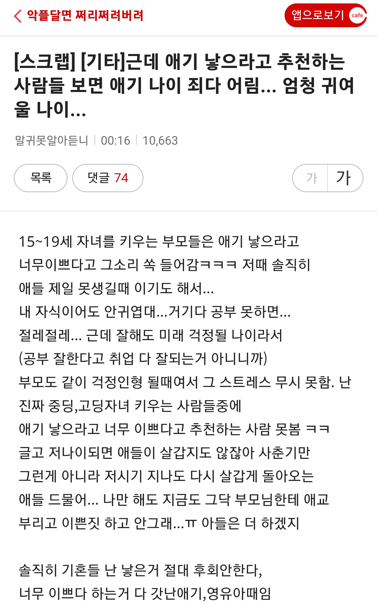
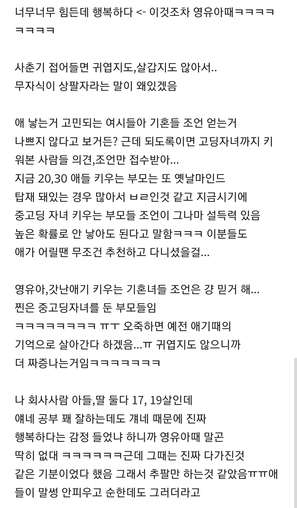

여성시대 펌


여성시대 펌
ㄹㅇ 지금 본인이 본인 부모님께 어떻게 하냐를 보면되지
혹은 본인이 20,30대 때 어떻게 했냐를 보던가
어른대어른으로 부모님을 어떻게 챙겨드렸냐, 그럴때 부모님은 행복해 하셨냐를 보면되지
뭔 말같잖은 논리냐ㅋㅋㅋㅋ
쟤네는 애기를 못갖는건데
왜 안갖는거라고 생각을 하는거지..?
애 낳으면 후회할거다 -> 신포도질
비혼 딩크하면 후회할거다 -> ??
장원영 낳고싶다
내 딸이 장원영이면 당장 낳음
장인어른
저런 논리라면 자녀들 다 키운 어르신들이 애 낳는게 좋다고 하시는건 뭐야
쟤들은 고아라서 그런소리 못들었나봄
위에 있잖아 어릴때 기억이 행복했다고 어르신들은 본인이 못해줬던걸 손주한테 책임없는 쾌락으로 좋아하시는거임
사촌형님은 애가 대학생인데도 이뻐죽을라카던데 ㅋㅋ
나도 너네들이 애 낳는거 원하지 않아...애들 불쌍해..
쟤들 혼자살겠다고 하는 애들이잖아 ㅋㅋㅋ 10년뒤에는 또 독립하면 버려진다고 지랄지랄, 20년뒤에는 어차피 죽을땐 혼자라고 지랄하고 있을거다 ㅋㅋ
제발 메갈 여시들은 초심잃지말고 가정꾸리지좀 말아줘라
저부류의 생퀴들이랑 결혼할사람과 낳음당할 애들이 어떤삶을 살거같음? 훤하게 잘보임
ㅋㅋㅋㅋㅋㅋ뭐래 할아버지가 되고 애들이 결혼하고 나가있어도
그분들은 애낳고 살아야한다고 말하는디
애기때 평생효도 다하는거라니...그게 무슨말이야
길게보면 사춘기는 잠깐이지. 장성해서 부모님께 효도안해?
자기가 안그랬다고 남들도 안 그럴거라고 생각하는건가.
그리고 손주 안겨드리면 얼마나 행복해하시는데.
내 평생 부모님이 그렇게 웃는거 처음봤다.
지들이 부모한테하는 꼬라지를 생각해서 안낳겠다는데 칭찬할일임
굿
애도 안 낳아본 것들이 고라니질 ㅈㄴ 하네 ㅋㅋ
저주가 따로없구나
무슨 개소리냐 애가 20살 넘어가면 그때는 또 그게 매력인데, 나이 50에 애들 다 커서 자기 살길 찾아가면 그때부턴 부모인생도 꽃길임
평균취업나이 30세인시대인데..?
쓰니가 부모한테 어떻게 대했는지, 부모가 어떻게 취급했는지 너무 잘 보여서 무서울 정도다.
무슨 시발 애를 귀여울라고 낳냐? 가정이 뭔지에 대한 개념 자체가 안 잡힌 거 보면 집안이 어떤지 안 봐도 알 수 있음.
그래서 다시선택할수있으면 안낳을거임? 물어보면 그래도 다시 낳을거라고함
그냥 행복해하지 말라고!! 하는거지 뭐 ㅋㅋㅋㅋ
꼭 지같은 것들한테 물어보니 저지랄하지 어리면 어린대로 커도 큰대로 다 이쁘다. 니 같은 년들도 느그 부모님들은 이쁘다고 안 하시디?? ㅋ
자식 기르는걸 추억팔이라고 하는게 정상이냐ㅋㅋㅋㅋ 도대체 집구석 분위기가 어떤거지;;
근데 원래 애기때 애교떨던 모습으로 평생 키우는거긴해
지조차도 부모가 그렇게 생각하며 키웠을텐데 에휴 자식농사 지대로 망해부렀구만
자식이 아니라 애완동물 느낌인데 저건
미혼에 딩크인게 낫다 라는 애들도
결국 지금 상황애서 얘기하는 거잖아 ㅋㅋㅋ
나이 50되서 독거중년 딩크부부가 낫다는 사람
몇이나 있을까? ㅋㅋㅋㅋ
60에는? 70에는?
미혼 딩크가 그나마 조금이라도 나아 보일 수 있는건
최대 40대 까지임.
기혼 딩크인데..
나는 애 생각은 있지만, 내가 외근직이라 와이프 혼자 애키우고.. 그런데 우리가 행복할 수 있을까? 란 생각으로 와이프가 진짜 가자고 하면 결정할 생각. 지금은 서로가 있어서 참 행복함.
공통의 끊기지 않는 대화주제가 마구마구 생김
내동생이 그러다 바람나서 이혼 엔딩
애는 태어나서 8살까지 효도 다한다고들함ㅋㅋ 그 이후는…
쟤네 부모님들은 다 지들 낳은거 후회하나봄
애낳은사람들 조롱하고 비난하면 자기부모욕하는거밖에더되나
부모님 나이 70대 중반을 넘기니.. 자식이란게 부모인것 마냥 흉내를 내야할 시기가 오더라. 며칠전 건강검진에 좀 문제가 있어서 한동안 대학병원 모시고 다녔는데, 불안하고 경황이 없으셔서 그런가 많이 위축되셨더라고. 간호사 말도 잘 못알아들어서 몇번 되물으시고.. 그 바쁜 대학병원 간호사가 친절하게 응대해 주는 것도 아니니 더 소심해지시고 ㅎㅎ 내가 살뜰한 자식은 아니지만, 그때만큼은 내가 있어서 다행이다. 싶더라고.
걍 자기 부모 생각해보셈 자기가 있어서 부모님이 행복하시다면 애기낳으면 좋을꺼임
확실한건 저런것들 부모는 저것들을 보고 행복하지 않겠다
ㅂ신들
애초에 애가 크면 '자녀를 잘 기르는 것'으로 화제가 바뀌어버리지.. 애가 큰 사람이 '아기를 낳는 것'을 대화 주제로 삼질 않으니 출산 추천도 없는 거고.. 뭔
ㅋㅋㅋㅋㅋㅋㅋㅋ
낳아본적도없는것들이ㅋㅋㅋㅋ
살면서 느낀 모든 기쁨을 합쳐도 애가주는 기쁨의 반이나될까?ㅋㅋ
주변 어른들 후회하신다는분들 못봄 그리고
나도 아이가 생기고나서야
우리아버지가 날 얼마나 좋아하셨는지 느껴지더라
못된것들이네 완전
콩콩팥팥이 맞음
우리회사 팀장님도 아들 고딩중딩인데 같이 게임하고 방학땐 3명이서 쌀먹함 ㅋㅋ개웃김
뭐 어떤글도 이거면 반박 가능하다
콩콩 팥팥 ㅋㅋㅋㅋㅋㅋ